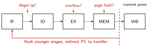
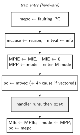

An exception transfers control to a handler because something happened that the normal instruction stream cannot express: a page fault, an illegal opcode, a system call, a device interrupt. The mechanism (trap) is the same for all of them; what differs is the trigger. Exceptions are how the OS exists at all: system calls, demand paging in Caches and Virtual Memory, preemptive scheduling, and device I/O are all built on this machinery.
| Term | Trigger | Sync? | Resume where? |
|---|---|---|---|
| exception (fault) | the instruction itself (page fault, illegal op, misalign, divide) | synchronous | re-execute the faulting instruction |
trap (e.g. ecall) |
deliberate, by the instruction | synchronous | after the instruction |
| interrupt | external event (timer, device, IPI) | asynchronous | between any two instructions |
| abort | machine failure | either | often not resumable |
An exception is precise when the saved state matches a clean point in program order: every older instruction has fully committed, and no younger instruction has changed any architectural state. The reported PC identifies exactly where execution logically stopped.
Software depends on this. A page fault handler must be able to fix the mapping and re-execute the faulting load as if nothing happened; a debugger must show a consistent stopped program; a context switch must be able to save and rebuild the exact state. Imprecise exceptions (some 1960s-90s FP units reported overflow “somewhere in the last few instructions”) made all three nearly impossible, which is why precision won everywhere.
Different stages detect different exceptions, and detection order is not program order: an older instruction’s page fault (MEM, cycle ) may be detected after a younger instruction’s illegal opcode (ID, cycle ). Acting immediately on the younger one would be wrong.
The rule: tag, don’t act. Each instruction carries an exception flag and cause through the pipeline registers of the Simple Instruction Pipeline; a flagged instruction is turned into a NOP for later stages (it must not write memory or registers). Only at the commit point (end of MEM, the last place an exception can arise) does the machine act on the oldest flagged instruction: flush all younger stages, and redirect fetch to the handler:

Asynchronous interrupts are simply injected as the flag of some convenient instruction at commit, giving them a precise boundary for free.
The same principle scales up: an OOO core marks the exception in the instruction’s reorder-buffer entry, and acts only when that entry reaches the ROB head at commit (Out of Order Execution and Register Renaming). Everything younger, including speculatively executed work, is squashed and the rename state rolled back, exactly the recovery machinery of a branch misprediction. This is why “add an exception” is cheap in modern cores: the hard part was already built for speculation.
Machine-mode CSRs (accessed via Zicsr instructions of the RISC-V ISA) implement traps:
| CSR | Holds |
|---|---|
mtvec |
handler base address (+ mode: direct or vectored) |
mepc |
PC of the interrupted/faulting instruction |
mcause |
interrupt bit + cause code |
mtval |
extra info (faulting address, bad instruction bits) |
mstatus |
interrupt-enable stack: MIE, MPIE, MPP |
mie / mip |
per-source interrupt enable / pending bits |

The MPIE/MPP fields make trap entry
re-entrant-safe: entry saves the interrupt-enable bit and privilege
mode, mret restores them. Common mcause codes:
2 illegal instruction, 8/11 ecall from U/M, 12/13/15
instruction/load/store page fault; interrupt bit set: 3 machine
software, 7 machine timer, 11 machine external.
Handler skeleton:
trap_handler:
csrrw sp, mscratch, sp # swap in a trusted stack pointer
addi sp, sp, -128
sd x1, 8(sp) # save caller-visible state
# ... save x5-x31 ...
csrr a0, mcause # dispatch on cause
csrr a1, mepc
call dispatch # C code from here
# ... restore registers ...
addi sp, sp, 128
csrrw sp, mscratch, sp
mret # pc <- mepc, mode/MIE restoredFor a synchronous ecall the handler must
mepc += 4 before mret, or it will loop; for a
page fault it must not, so the faulting access retries.
An interrupt is taken when it is pending (mip), enabled
(mie), and interrupts are globally on
(mstatus.MIE), with fixed priority among sources.
Nested interrupts need software help: entry hardware
clears MIE, and a handler that wants to be preemptible saves
mepc/mcause and re-enables MIE.
mtime/mtimecmp raise the timer interrupt when
mtime >= mtimecmp; this is the OS scheduler’s tick.medeleg/mideleg route chosen traps directly to
S-mode so the OS handles its own page faults without firmware
round-trips.Latency note: interrupt latency = longest uninterruptible window (one instruction, or one handler critical section). Real-time systems care about the worst case, not the mean, which argues against very long-running instructions.
References:
MIT License
Copyright (c) 2025 Sai Govardhan (saigov14@gmail.com)
Permission is hereby granted, free of charge, to any person obtaining a copy
of this software and associated documentation files (the "Software"), to deal
in the Software without restriction, including without limitation the rights
to use, copy, modify, merge, publish, distribute, sublicense, and/or sell
copies of the Software, and to permit persons to whom the Software is
furnished to do so, subject to the following conditions:
The above copyright notice and this permission notice shall be included in all
copies or substantial portions of the Software.
THE SOFTWARE IS PROVIDED "AS IS", WITHOUT WARRANTY OF ANY KIND, EXPRESS OR
IMPLIED, INCLUDING BUT NOT LIMITED TO THE WARRANTIES OF MERCHANTABILITY,
FITNESS FOR A PARTICULAR PURPOSE AND NONINFRINGEMENT. IN NO EVENT SHALL THE
AUTHORS OR COPYRIGHT HOLDERS BE LIABLE FOR ANY CLAIM, DAMAGES OR OTHER
LIABILITY, WHETHER IN AN ACTION OF CONTRACT, TORT OR OTHERWISE, ARISING FROM,
OUT OF OR IN CONNECTION WITH THE SOFTWARE OR THE USE OR OTHER DEALINGS IN THE
SOFTWARE.